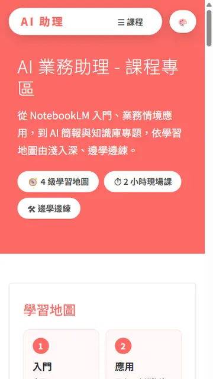
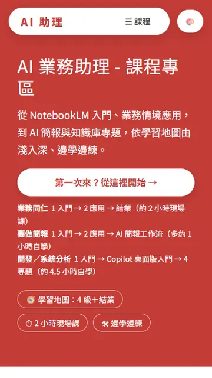
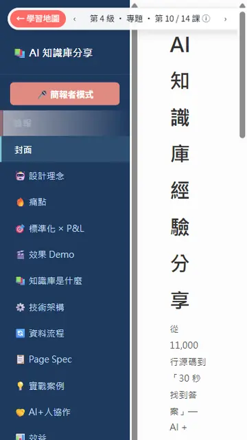
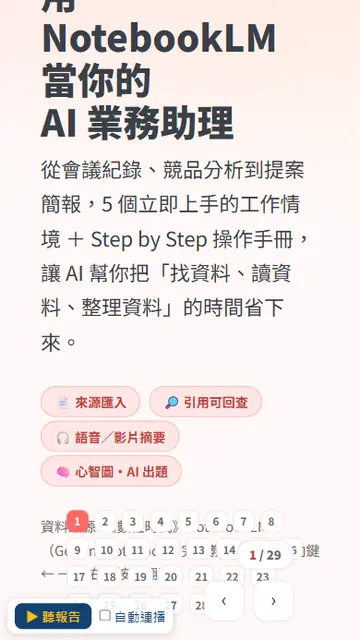

本課改編自內部分享〈AI Agent 平行開發實戰：流程導入、效率提升與應用心得〉。原本是程式開發的案例，這裡換成不用寫程式的客服情境；練習資料全部虛構。介面畫面是示意圖，實際按鈕名稱可能隨版本更新而不同。
學完你會、開始前準備
學完這一課，你可以
- 判斷一批工作能不能拆給多個 AI 同時做。
- 在 Copilot 桌面版用
/plan ＋ /fleet，讓主 AI 拆工作、派給子 AI、收回成果。
- 設好「規範」和「回報格式」，讓每個子 AI 交出看得到的證據，不是只說「完成了」。
- 知道哪 4 件事一定要自己判斷，不能交給 AI。
開始前，確認這 4 件事
真實故事：1 個人、2 天、近 30 件
某專案上線前的使用者測試，收到 83 項回饋（47 項錯誤＋36 項需求和優化），修正期限只有 20 天。
- 以前：一件一件看、改、測、記錄
- 估計：近 30 件要 1 週以上
- 這次：主 AI 拆工作、子 AI 同時做
- 結果：1 人 2 天完成近 30 件
⚠️ 這個數字要誠實看
- 2 天包含分析、修改、自動檢查、整理證據，不含上線前的人工審查、使用者確認。
- 1 週以上是依過去做法估算，不是嚴格的實驗對照。
- 這 30 件是挑過的：規格清楚、範圍小、彼此不相關、做完能檢查。
換成你的工作也一樣：能挑出「規則清楚、互不相干」的一批工作，才會有這種效果。下面教你怎麼挑、怎麼做。
一個 AI vs 一組 AI
用餐廳比喻：一位廚師再厲害，10 桌客人點菜也只能一道一道做。換成「主廚＋幾位二廚」，主廚分配菜單、二廚同時開火、主廚出菜前檢查，就快很多。
8 張客訴單：排隊做 vs 同時做
1一個 AI：排隊做
AI01020304050607 08全部完成
開始時間 →
做完一件才做下一件，總時間 ＝ 8 件加起來。
2主 AI 帶子 AI：同時做
主 AI拆工作
子 AI01
子 AI02
子 AI0603
子 AI04
子 AI05
子 AI07
子 AI08
主 AI整合檢查全部完成（約快一半）
開始時間 →
示意圖（長度只代表概念，不是實測時間）：多出「拆工作」和「整合檢查」兩段，但中間 8 件同時做，整體還是快很多。最慢的那條（03＋06 排隊）決定什麼時候全部完成。
| 一個 AI（排隊） | 你自己開很多視窗 | 主 AI 帶子 AI（本課） |
|---|
| 怎麼做 | 做完第 1 件才做第 2 件 | 每個視窗各做一件，你來回切換 | 主 AI 拆工作、派工、收回、檢查 |
| 誰協調 | 不用協調 | 你（很累，容易漏） | 主 AI（你只看結果和決定） |
| 撞在一起 | 不會 | 常常兩邊改同一份檔案 | 主 AI 事先排開 |
| 適合 | 少量、前後相關的工作 | 2～3 件，偶一為之 | 一批規則相同、互不相干的工作 |
重點不是「AI 越多越好」，而是適合平行的工作，用適量的 AI。AI 越多，拆工作、整合、檢查的成本也越高，用量（AI Credits）也越多。
誰做什麼：你、主 AI、子 AI
角色分工
1👤 你（組長）
定目標、給規範
看計畫、核准
做規則、金額的決定
最後審查、決定送出
2🤖 主 AI（主廚）
① 分析：讀完全部工作
② 分組：哪些同時做、哪些排隊
③ 派工：一件工作一個子 AI
④ 追蹤：照回報格式收成果
⑤ 處理例外：重做、改排隊、交給你
3🤖🤖🤖 子 AI（二廚）
只拿到自己那件工作
照規範做、自己先檢查
交回成果＋證據
只動自己那份檔案
示意圖：主 AI 知道全局；每個子 AI 只知道自己那件事。最後由你把關。
品質要過 3 關
- 子 AI 自我檢查：逐條對規範
- 主 AI 整合檢查：格式、互相矛盾、漏做
- 你審查：規則、語氣、能不能送出
為什麼子 AI 只知道自己那件事？
就像派工單：二廚只需要知道「3 號桌，牛排五分熟，不要洋蔥」，不需要知道整間餐廳今天的訂位。資訊少，反而不容易搞混。主 AI 派工時要給齊 4 樣東西：工作內容、要遵守的規範、可以動的檔案、回報格式。
哪些工作能平行？先過 5 項檢查
| ✅ 適合平行 | 生活例子 | ❌ 先不要平行 | 生活例子 |
|---|
| 驗收標準清楚 | 回覆要道歉、說原因、給時間 | 規則還沒定 | 今年補償標準還在開會 |
| 範圍界定得出來 | 一張客訴單一份回覆 | 大改架構 | 重寫整本服務手冊 |
| 彼此不相干 | 不同客戶、不同訂單 | 大家都要改同一份 | 8 個人同時改一張總表 |
| 做完能檢查 | 對照規範逐條打勾 | 沒辦法核對對錯 | 「寫得有溫度一點」 |
| 有留紀錄 | 每份存成獨立檔案 | 高風險、直接生效 | 直接寄給客戶、直接改正式資料 |
一句話判斷：「這幾件事，交給 3 個不認識彼此的同事同時做，會不會出問題？」不會，就可以平行。
撞在一起怎麼辦？
原本的案例裡，有 2 個錯誤都要改同一支程式。如果同時改，後改的會蓋掉先改的。解法是：改成排隊，第 2 個等第 1 個做完，重新讀最新版本再改。
換成文書工作，最常見的「撞在一起」有 2 種：
追蹤總表：誰來改？
1❌ 子 AI 各自改總表
10:00 子 AI-01 打開總表（舊版）讀
10:00 子 AI-02 打開總表（舊版）讀
10:05 子 AI-01 寫入「01 已回覆」存檔
10:06 子 AI-02 寫入「02 已回覆」存檔
結果：02 是拿舊版改的，存檔時把 01 的更新蓋掉了。總表上 01 又變回「待處理」。
2✅ 各寫各的，最後只由主 AI 改
子 AI-01 只建立 回覆_01.md完成
子 AI-02 只建立 回覆_02.md完成
……其他子 AI 也各寫各的完成
主 AI 讀最新版總表，一次更新 8 列最後做
結果：沒有人互相蓋掉，總表 8 列都正確。
示意圖：兩個人同時拿舊版本修改同一份檔案，後存檔的會蓋掉先存檔的。這就是為什麼「共用的檔案只給一個人改」。
| 狀況 | 練習包裡的例子 | 怎麼處理 |
|---|
| 同一份檔案 | 8 份回覆都要更新「追蹤總表.csv」 | 子 AI 不准碰總表；全部做完後，由主 AI 一次更新 |
| 同一個對象 | 客訴單 03 和 06 是同一位張太太、同一張訂單 | 交給同一個子 AI，或排隊做，讓兩份回覆說法一致 |
原則：先排開，再整合，最後檢查。事先預估不可能百分之百準確，所以子 AI 做到一半發現要動別的檔案時，要先回報主 AI，不可以自己動手。
「做完」要有證據
子 AI 回一句「完成了」，你看不出它做得對不對。請它照固定格式回報，主 AI 和你才能快速檢查：
| 回報項目 | 為什麼要 |
|---|
| 產出檔案 | 知道東西在哪，可以打開看 |
| 規範逐條檢查 | 每條寫「符合」或「不符合＋原因」，不能只寫「都符合」 |
| 需要人判斷的事 | 規則外、拿不定的，一定要浮上來給你 |
| 動到哪些檔案 | 確認沒有亂動別人的東西 |
子 AI・客訴 01 的完成回報
1❌ 看不出對錯
完成了！回覆已經寫好，全部符合規範。😊
寫在哪？哪幾條符合？有沒有答應不該答應的事？都不知道，只能自己從頭檢查。
2✅ 照回報格式
產出檔案：回覆/回覆_01.md可打開
1 開頭：稱呼陳小姐，第一段道歉符合
2 原因：只寫「物流轉運中心爆量」符合
3 處理＋時間：3 個工作天內寄出折抵券符合
4 補償：運費折抵券 60 元（延遲 3 天以上）符合
5 字數：186 字符合
6 隱私：沒有提到其他客戶符合
需要人判斷：無—
動到的檔案：只有 回覆_01.md沒越界
示意圖：右邊這種回報，主 AI 和你只要掃一眼，就知道哪裡要細看。實際文字依 AI 而異。
練習包的〈回覆規範.md〉最後已經附好這個格式，提示詞裡只要說「照回報格式」就好。
你要自己判斷的 4 件事
AI 加快的是「執行和協調」，不是取代你的責任。下面 4 件事，就算 AI 寫得再好，也要你看過、你決定：
| 判斷 | 原案例（開發） | 本課（客服） |
|---|
| 1. 規則對不對 | 業務規則是否正確 | 補償、退款條件有沒有超出權限 |
| 2. 關鍵內容 | 關鍵程式邏輯 | 原因有沒有亂編、承諾的日期做不做得到 |
| 3. 會不會影響別人 | 跨功能影響 | 同一位客戶的兩份回覆有沒有矛盾 |
| 4. 要不要送出 | 上線決定 | 回覆要不要寄出、何時寄 |
實戰案例：用 AI 分身一起整理這個教學網站
你正在看的這個教學網站，也是用本課的方法整理的。結論：約 30 分鐘做完原本要 100 分鐘以上的工作，而且每一項都有檢查證據。下面的「分身」就是前面說的子 AI。
任務是什麼
網站有 20 頁。我們想一次把這幾件事全部整理好：
- 版面：每一頁看起來一致。
- 手機版：手機上不會左右亂捲、內容不會被切掉。
- 深色主題：切到夜間模式，字還是看得清楚。
- 好不好讀：第一次來的人，找得到要看什麼。
- 無障礙：視力不好、用螢幕報讀軟體的人也能用。
怎麼分工
分兩輪：第 1 輪只「看」，第 2 輪才「改」。看的時候大家讀同一批頁面也不會撞在一起；改的時候就要依檔案分工。
整理教學網站：分工流程
主 AI（組長）定目標、拆工作、派分身
↓
第 1 輪「審查」：4 個分身同時看
- 視覺一致性
- 手機版＋深色主題
- 新手好讀好找
- 無障礙＋速度
每個分身看全部 20 頁，但只看自己那個角度；這一輪不改任何檔案。
↓
主 AI 彙整65 個問題 → 刪掉重複、合併 → 22 項待改
↓
第 2 輪「修改」：8 個分身同時改
- 全站共用
- 知識庫分享
- NotebookLM 業務助理
- 人偶導讀簡報
- AI 簡報工作流
- NotebookLM 入門
- 網頁功能 Reengineering
- 課後總結
每個分身只改自己的檔案；大家共用的檔案只交給「全站共用」分身。
↓
主 AI 複查20 頁 × 電腦／手機 × 3 種主題，一頁一頁打開看
↓
人類審核負責人看過、說「通過」，才上線
示意圖：依這次實際的分工畫成，方塊大小不代表花的時間。
結果：用數字看
第 1 輪審查（4 個分身）17.5 分鐘一個一個做約 48 分鐘
第 2 輪修改（8 個分身）12 分鐘一個一個做約 54 分鐘
合計約快 3.4 倍實際約 30 分鐘；一個一個做約 101 分鐘
找到的問題65 → 22 項65 個問題整理成 22 項，全部修好
主 AI 複查0 破版20 頁 × 2 種寬度 × 3 種主題，共 120 種組合，0 錯誤
幾個看得出差別的改善（「對比」是文字和底色的深淺差，數字越大越好讀，標準是 4.5 以上）：
| 改善項目 | 改之前 | 改之後 |
|---|
| 手機看「知識庫分享」17 頁，畫面會左右亂捲 | 頁面寬 624～1191 | 全部剛好 390（手機寬） |
| 手機看「NotebookLM 業務助理」，投影片內容被切掉 | 16 張 | 0 張 |
| 珊瑚紅主題的白字對比 | 2.84（不夠） | 5.19 |
| 全站對比不足的地方 | 44～103 處 | 0 處 |
這些數字要誠實看：這是個人經驗，不保證你也一樣。「一個一個做」是把每個分身各自花的時間加起來估算的；30 分鐘不含寫任務說明和人類審核的時間。
改之前、改之後（手機畫面）
首頁：多了「第一次來？從這裡開始」按鈕，並依身分列出建議的上課順序。

改之前：不知道從哪一課開始

改之後：一進來就有開始按鈕和建議路線
知識庫分享：手機上側邊目錄占掉大半畫面，標題被擠成一字一行；改成上方可左右滑的分頁列。

改之前：目錄占半個畫面，標題一字一行
改之後：目錄移到上方，內容滿版好讀
NotebookLM 業務助理：手機上翻頁的頁碼按鈕疊在文字上，內容被蓋住；改成只顯示「1 / 29」和左右鍵。

改之前：頁碼按鈕蓋住文字
改之後：文字完整，翻頁鍵移到角落
學到的 4 個重點
- 先「多人審查」，再修改：4 個分身各從一個角度看，找到的問題比一個人從頭看到尾更全。審查只看不改，所以大家看同一頁也不會撞在一起。
- 一個檔案只給一個分身改：大家共用的檔案交給「全站共用」分身，其他分身只改自己那一課，就不會互相蓋掉。
- 主 AI 負責彙整和複查：分身的回報不一定完全對。例：有個分身為了不碰共用檔，用「權宜做法」繞過去；主 AI 複查時發現，改回正式做法。
- 人類最後把關：全部做完，先給負責人看，同意了才上線。
換你試試：整理一批文件
同樣的流程，也能用在整理共用文件、多份報告。在 Copilot 桌面版開一個新的工作階段，貼上下面這段，把【】換成你的內容：
💬 案例提示詞：主 AI 帶分身整理一批文件把【】換掉後直接貼上
你是我的「主 AI」（組長助理）。我要整理【資料夾名稱，例：部門季報】裡的【份數，例：6】份文件。
目標：【例：格式一致、數字正確、主管 3 分鐘看得懂重點】。
請照下面 5 步做，每一步做完先停下來給我看，我說「可以」再做下一步。
第 1 步：多人審查（只看，不改）
- 開 4 個分身（子 AI）同時審查全部文件，每個只看一個角度：
1. 格式一致：標題、表格、日期和數字的寫法
2. 內容正確：數字、單位、前後有沒有矛盾
3. 好不好讀：第一次看的人懂不懂、重點有沒有放前面
4. 有沒有漏：該有的段落、附件、資料出處
- 每個分身回報：哪個檔案、哪一段、問題是什麼、建議怎麼改、嚴重程度（高／中／低）。
- 這一步任何檔案都不准改。
第 2 步：彙整成待改清單
- 把 4 份回報合併，刪掉重複的，整理成一張表：編號、檔案、問題、改法、嚴重程度、交給哪個分身。
- 標出哪些要我決定（例如：規則、金額、要不要刪掉內容）。
- 等我核准清單再往下做。
第 3 步：分工修改
- 依「檔案」分工：一個檔案只交給一個分身，不可以兩個分身改同一個檔案。
- 很多文件共用的東西（例如：範本、封面、名詞表）只交給一個「共用」分身改，其他分身不准動。
- 每個分身只改清單上分給它的項目，做完回報：改了哪幾項、改之前和改之後各一句、沒改的原因。
第 4 步：你自己複查
- 你親自打開每個檔案檢查，不要只看分身的回報。
- 逐項對照待改清單，標成：已修好／沒修好／新冒出的問題。
- 如果分身用「權宜做法」繞過規則（例如：不能改共用範本，就在自己的檔案另外硬寫一份），請改回正式做法。
第 5 步：交給我審核
- 給我一份總結：改了幾項、還剩哪些、哪些需要我決定。
- 在我說「通過」之前，不要寄出、不要覆蓋正式版本、不要通知其他人。
主 AI 沒有自己開分身的話，在核准清單後輸入 /fleet 請照清單執行（見下方「跟著做 A」）。第一次試，建議先挑 3～6 份文件就好。
跟著做 A：用 /plan ＋ /fleet 回覆 8 張客訴單
情境：你是「好日子生活館」客服組長，下班前要回覆 8 張客訴單，並更新追蹤總表。我們讓一個主 AI 帶子 AI 一起做。
步驟 1 打開練習資料夾
- 把練習包解壓縮到桌面，會得到「平行練習」資料夾。先打開〈回覆規範.md〉看一下：這就是驗收標準。
- 在 Copilot 側欄「工作階段」旁按「＋」，選「開啟本機資料夾」，選「平行練習」。入門課學過的方式也可以，只要工作階段是開在「平行練習」資料夾就好。
- 輸入框下方：模式選 Plan、模型選 Auto。
GitHub Copilot app · 開新工作階段
1側欄按「＋」
💬 工作階段（Sessions）＋
在哪裡開始？（Start session in）
📁 選擇已加入的專案…
📂 開啟本機資料夾（Open local folder） ← 選這個
2選「平行練習」
📂 桌面\平行練習
├ 📂 客訴單（01～08.txt）
├ 📂 回覆（空的）
├ 📄 回覆規範.md
├ 📄 追蹤總表.csv
└ 📄 讀我.txt
選擇資料夾
3輸入框下方
輸入任務… @ 加檔案、/ 叫指令
這台電腦 ▾模式：Plan ▾模型：Auto ▾
側欄出現「平行練習」就成功了。接著貼上提示詞 1。
示意圖（非實際畫面）：按鈕可能是中文或英文，位置依版本而異。重點是工作階段要開在「平行練習」資料夾。
步驟 2 請主 AI 先拆工作、分組（還不准動手）
💬 提示詞 1：拆工作、分組直接複製貼上
/plan 你是客服組長的助理，擔任「主 AI」。
請讀「客訴單」資料夾裡的 8 張客訴單、@回覆規範.md、@追蹤總表.csv。
目標：每張客訴單寫一份回覆，存到「回覆」資料夾，最後更新追蹤總表。
先不要寫回覆。請給我一份工作計畫，用表格列出：
1. 每張客訴單：客戶、問題、預計怎麼處理、補償是否在權限表內
2. 分組：哪些可以同時交給子 AI 做、哪些要排隊或合併給同一個子 AI，說明理由
（注意：同一位客戶、同一張訂單的客訴，回覆要一致）
3. 需要我判斷的事：超出補償權限、資料不足的，全部列出來
4. 追蹤總表：說明只由你（主 AI）在最後統一更新，子 AI 不准改
等我核准後才開始。
GitHub Copilot app · 平行練習
1側欄
📁 平行練習
● 客訴回覆（主 AI）
＋ 新工作階段
2主 AI 的計畫
/plan 你是客服組長的助理，擔任「主 AI」……
分組建議
同時做01、02、04、05、07：不同客戶、互不相干，各派 1 個子 AI
合併03＋06：同一位張太太、同一張訂單，交給同 1 個子 AI，寫兩份但說法一致
要你決定08：客戶要求賠償 2,000 元，超出權限表，回覆會寫【待主管決定】
最後追蹤總表由我統一更新
共 7 個子 AI。核准後開始。
核准我要修改
示意圖（非實際畫面）：你會先看到計畫，還沒有任何檔案被改。實際的分組可能和這裡略有不同。
步驟 3 你檢查計畫（最重要的 1 分鐘）
- ☐ 03 和 06 有沒有被合併或排隊？（同一位客戶）
- ☐ 08 有沒有被列為要你決定？（超出補償權限）
- ☐ 追蹤總表是不是只有主 AI 在最後改？
- ☐ 子 AI 的數量，沒有比可以同時做的工作多？
有一項不對，就用提示詞 2 請它改；全部 OK 就進步驟 4。
💬 提示詞 2：修正計畫計畫有問題時用；把 ___ 換掉
計畫要修改：___（例：03 和 06 是同一位客戶，請交給同一個子 AI，並先寫 06 再寫 03）。
請更新計畫表格，其他不變，再給我確認。
步驟 4 核准後，用 /fleet 開工
如果畫面出現核准選項，選「自己輸入提示詞」那一種（練習時比較看得清楚每一步），再貼上：
💬 提示詞 3：派工執行直接複製貼上
/fleet 計畫核准，請照計畫執行。
派工給每個子 AI 時，要給齊 4 樣東西：
1. 它負責的客訴單（只給它自己那張；03 和 06 給同一個子 AI）
2. @回覆規範.md 全文
3. 它唯一可以建立的檔案：「回覆/回覆_編號.md」
4. 回報格式：照〈回覆規範.md〉最後的「完成回報格式」
規則：
- 子 AI 不准修改追蹤總表、客訴單、規範
- 需要動到其他檔案時，先停下來回報你，不可以自己動手
- 遇到規範沒寫到的情況，寫【待主管決定】，不可以自己決定
全部子 AI 完成後，先把每份回報彙整給我看，還不要更新追蹤總表。
GitHub Copilot app · 平行練習
1子 AI 進度
子 AI・客訴 01完成
子 AI・客訴 02完成
子 AI・客訴 03＋06進行中
子 AI・客訴 04完成
子 AI・客訴 05進行中
子 AI・客訴 07進行中
子 AI・客訴 08需要人判斷
2權限詢問
🔐 子 AI 要建立檔案：
平行練習\回覆\回覆_02.md
允許拒絕
先看 2 件事：① 位置在「回覆」資料夾裡嗎？② 檔名是自己那張的嗎？都對才允許。
示意圖（非實際畫面）：子 AI 會同時進行，完成順序不一定。真正的進度顯示方式依版本而異，通常會在對話裡陸續出現各子 AI 的回報。
⚠️ 權限詢問會比平常多7 個子 AI 各要建立檔案，就會問好幾次。練習時每次都看一下位置再允許，是很好的練習。真的太多，可以把工具權限暫時改成「Assisted（輔助）」，只限練習資料夾，做完改回來。
步驟 5 主 AI 整合檢查
💬 提示詞 4：整合檢查子 AI 都回報後用
請以主 AI 的身分，整合檢查全部回覆：
1. 打開「回覆」資料夾的每一份，逐條對照 @回覆規範.md 第 1～6 條，用表格列出結果
（不要只看子 AI 的回報，要自己打開檔案檢查）
2. 03 和 06：兩份回覆的說法、補償、日期有沒有矛盾
3. 有沒有任何回覆答應了補償權限表以外的東西
4. 有沒有提到其他客戶的資料
不符合的，直接請負責的子 AI 重寫一次；重寫還是不行，就列給我。
全部檢查完，再更新 @追蹤總表.csv：狀態、回覆檔、需要人判斷 這 3 欄。
GitHub Copilot app · 平行練習
1主 AI 的檢查表
01不符合第 2 條
02、04、05、076 條都符合
03＋06 說法一致？一致
08待主管決定
超出權限的承諾沒有
提到其他客戶沒有
2主 AI 的處理
⚠️ 回覆_01.md 寫「因颱風影響，物流延遲」。
客訴單只查到「物流轉運中心爆量」，沒有提到颱風。
→ 不符合規範第 2 條（不可以自己猜原因）。
已請子 AI 重寫。
✅ 重寫完成：改成「物流轉運中心 10/3～10/7 爆量，延遲 5 天」，6 條全部符合。
📋 追蹤總表已更新 8 列。
❓ 08 需要你決定：客戶要求賠償 2,000 元。
示意圖（非實際畫面）：「颱風」是故意舉的例子。實際操作時 AI 不一定犯這個錯，但如果犯了，主 AI 打開檔案逐條對規範就抓得到。
參考結果（每次內容可能略有不同）
| 編號 | 狀態 | 回覆檔 | 需要人判斷 |
|---|
| 01 | 已回覆 | 回覆_01.md | 無（運費折抵券 60 元，在權限內） |
| 02 | 已回覆 | 回覆_02.md | 無 |
| 03 | 已回覆 | 回覆_03.md | 無（9 折券；和 06 一致） |
| 04～07 | 已回覆 | 回覆_04～07.md | 無 |
| 08 | 待主管決定 | 回覆_08.md | 客戶要求賠償 2,000 元，超出權限 |
檢查重點：01 的原因只能寫「物流轉運中心爆量」，不能自己加「颱風」之類沒查到的原因；07 的退款時間如果寫「明天到帳」，要問它根據是什麼。
步驟 6 你做決定，請主 AI 收尾
08 的賠償要你決定（真實工作中要問主管）。決定後告訴主 AI：
💬 提示詞 5：人工決定回填把 ___ 換成你的決定
08 的決定：___（例：不給現金賠償；改送 500 元購物金，並由主管本人打電話致歉）。
請只修改「回覆/回覆_08.md」，把【待主管決定】換成這個決定，其他內容不變。
改完重新對照規範第 1～6 條檢查一次，並更新追蹤總表 08 這一列。
最後給我一份總結：完成幾件、改過幾次、還有沒有要我處理的事。
完成標準：「回覆」資料夾有 8 份回覆；03 和 06 說法一致；08 是照你的決定寫的；追蹤總表 8 列都更新了；而且你親自打開看過至少 3 份。
跟著做 B（選做）：用 Projects 看到每個分身
做法 A 的子 AI 都在同一個對話裡，做完就收回。如果工作比較大、要好幾天、或你想點進去看每個分身在做什麼，可以改用 Projects（目前是預覽版）。
- 側欄「Projects」旁按「＋」，開啟「新專案」頁面。可以不選 GitHub repository。
- 在說明欄貼上提示詞 6（目標＋規則＋第一批工作），建立。
- 右邊的 Library 分頁按「Add」→「Add folder…」，加入「平行練習」資料夾，讓所有工作階段都讀得到資料。
- Copilot 會依目標開出幾個工作階段。到 Overview 分頁看進度：分成「Needs input（等你回答）」「Open」「Working」「Done」。
- 看到「Needs input」就點進去回答（例如 08 的賠償）。想改某個分身的方向，點進去用「Steer this session」直接跟它說。
GitHub Copilot app · Projects
1側欄
📋 Projects
● 客訴回覆 10/12
├ 回覆 01、02
├ 回覆 03＋06
├ 回覆 04、05、07
└ 回覆 08
2和主 AI 對話
目標：今天下班前回覆 8 張客訴單……
已開 4 個工作階段。08 需要你決定賠償方式，請到 Overview 的 Needs input 回答。
輸入訊息…
3Overview
Needs input1
Working2
Done1
LibraryOverviewAutomations
示意圖（非實際畫面）：Projects 把多個工作階段放在同一塊看板上。預覽版功能，名稱和位置可能變動。
💬 提示詞 6：Projects 目標描述貼到「新專案」說明欄
目標：今天下班前，回覆「平行練習」資料夾裡的 8 張客訴單，並更新追蹤總表。
規則：
- 每份回覆都要符合〈回覆規範.md〉第 1～6 條，存到「回覆/回覆_編號.md」
- 同一位客戶、同一張訂單的客訴（03 和 06）交給同一個工作階段處理，說法要一致
- 補償只能用規範裡的權限表；超出的寫【待主管決定】，並把問題丟到 Needs input 問我
- 追蹤總表只由協調者在最後統一更新，其他工作階段不准修改
- 只用資料夾裡的資料，不要自己編原因
第一批工作：
1. 讀完 8 張客訴單，提出分組計畫給我核准
2. 核准後，依分組開工作階段撰寫回覆
3. 全部完成後，逐份對照規範檢查，更新追蹤總表，給我一份總結
| 做法 A：/fleet | 做法 B：Projects |
|---|
| 子 AI 在哪 | 同一個對話裡，做完收回 | 每個都是獨立的工作階段，可以點進去 |
| 適合 | 今天做完的一批工作 | 要好幾天、要邊做邊調整的工作 |
| 你怎麼追進度 | 看對話裡的回報 | 看 Overview 看板 |
| 建議 | 先學這個 | 熟了再用 |
把方法存起來：下次一句話開工
原案例的第 2 個心得是：把規範寫成 Skill，AI 每次都照同一套做法，不用重講。你可以請 AI 幫你寫：
💬 提示詞 7：存成 Skill做完一輪之後用
請把這次「主 AI 帶子 AI 平行回覆客訴」的做法，整理成一個個人 Skill，名稱用 parallel-reply。
內容包含：
1. 什麼時候用（描述要寫清楚，讓你以後判斷得出來）
2. 步驟：先 /plan 拆工作分組 → 我核准 → /fleet 派工 → 主 AI 整合檢查 → 我決定 → 收尾
3. 派工 4 樣東西、子 AI 不准做的事、回報格式
4. 這次遇到的問題和解法（例如：同一位客戶要合併、總表只能主 AI 改）
寫好後，告訴我存在哪裡、下次怎麼叫出來。
存好後，下次在新工作階段輸入 /parallel-reply，再說「這次的客訴單在 ___ 資料夾」就能開工。看不到的話，輸入 /skills reload 重新載入。
每週固定要做？設成自動化
Projects 的 Automations 分頁可以設定定時任務。例如：
💬 提示詞 8：每週自動化貼到 Automations 的說明
每週一早上 9:00：讀「客訴單」資料夾裡上週新進的客訴單，用 parallel-reply 的做法分組並寫好回覆草稿，存到「回覆」資料夾。
只寫草稿，不要寄出；超出補償權限的一律寫【待主管決定】。
完成後給我一份清單：幾件、哪幾件需要我判斷。
自動化只產生草稿。寄出永遠是你決定（你要自己判斷的第 4 件事）。
提示詞總表
提示詞 1～8 在上面的步驟裡；整理一批文件的完整流程，在「實戰案例」的案例提示詞。下面 4 則是通用的，換成任何工作都能用：
💬 提示詞 9：判斷能不能平行動手前先問
我有一批工作：___（例：整理 12 份供應商報價，每份寫一頁摘要）。
請用下面 5 項檢查，判斷適不適合拆給多個子 AI 同時做：
1. 驗收標準清不清楚 2. 範圍界定得出來嗎 3. 彼此相不相干 4. 做完能不能檢查 5. 有沒有留紀錄
每項給「是／否＋理由」。不適合的話，告訴我先補什麼。
💬 提示詞 10：先寫規範還沒有規範時
我要請多個 AI 同時做：___。
請幫我寫一份「規範.md」，包含：
1. 每份成果都要符合的條件（5～7 條，每條都要能檢查對錯）
2. AI 可以自己決定的事、一定要問我的事
3. 存檔位置和檔名規則
4. 完成回報格式（產出檔案、規範逐條檢查、需要人判斷、動到哪些檔案）
有不清楚的地方先問我。
💬 提示詞 11：撞在一起時發現兩件工作有關聯
___ 和 ___ 會動到同一份檔案（或同一個對象）。
請改成排隊：先做 ___，做完後，下一個子 AI 要重新讀最新版本再做。
請更新計畫，說明新的順序，等我核准。
💬 提示詞 12：失敗時重來某個子 AI 做不好
___ 的成果不符合規範第 ___ 條（問題：___）。
請先分析原因：是規範沒寫清楚、資料不夠，還是子 AI 沒照做？
- 規範沒寫清楚：提出規範的修改建議給我核准
- 資料不夠：列出缺什麼，交給我
- 沒照做：派一個新的子 AI 重寫，並把這次的錯誤寫進派工說明
重寫 2 次還不行，就停下來交給我。
換成你的工作：4 步驟開始
- 挑 2～3 件低風險的工作：規則清楚、互不相干、做錯也救得回來。例：整理 3 份會議紀錄的待辦、3 份供應商報價摘要、3 間分店的月報重點。
- 寫一份最小的規範：用提示詞 10，5～7 條就好，不求完整。規範太少 AI 會猜；太多會分心。從錯誤中慢慢補。
- 畫好界線：AI 只能寫草稿、只能動指定資料夾；規則、金額、送出由你決定。
- 記錄、再擴大：做完填下面這張表，效果好再加量。
| 記錄項目 | 第 1 次 | 第 2 次 |
|---|
| 件數 | | |
| 以前大約要多久 | | |
| 這次花多久（含你檢查的時間） | | |
| 重做幾次 | | |
| 你親手改了幾處 | | |
導入最難的通常不是工具，而是把規則講清楚。規則模糊，AI 只會更快地做出不穩定的結果。反過來說，為了用 AI 而把規範寫清楚，本身就讓團隊更有效率。
常見問題
我不會寫程式，可以用嗎？
可以。原案例是改程式，但方法一樣：清楚的規範、互不相干的工作、看得到的證據。本課全程只用文件。
AI 開越多越快嗎？
不一定。AI 越多，拆工作、整合、檢查的成本越高，撞在一起的機會也越大。子 AI 的數量不要超過能同時做的工作數。大家都要改同一份東西時，開再多也只會互相蓋掉。
會不會比較耗用量？
會。每個子 AI 都各自和模型溝通，/fleet 通常會用掉比較多 AI Credits。要比的是整體：你省下的時間、等待和重做，是不是比多用的量值得。只有適合平行的工作才用。
子 AI 說「完成了」，就是完成了嗎？
不是。要看證據：檔案打開來看、規範逐條檢查的結果、動了哪些檔案。提示詞 4 特別要求主 AI「自己打開檔案檢查，不要只看回報」，就是這個原因。
主 AI 也會判斷錯嗎？
會，它也是 AI。所以計畫要你核准（步驟 3）、成果要你抽查、規則和金額由你決定。高風險或大家都要動的工作，就不要平行，改成一件一件做。
做法 A（/fleet）和做法 B（Projects）要選哪個？
先用 A：一個對話就能完成，容易看懂。工作要做好幾天、要隨時調整某個分身的方向，再用 B。B 目前是預覽版，畫面可能常變。
原案例「2 天 30 件」，我也做得到嗎？
不要直接比。那 30 件是挑過的（規格清楚、範圍小），而且 2 天不含後續審查。建議從 2～3 件開始，用「換成你的工作」那張表記錄自己的數字。
規範改了，Skill 會過時嗎？
會。規範一改，就請 AI 同步更新 Skill（例：「補償權限表改了，請更新 parallel-reply」）。AI 重複犯同一個錯時，也把解法寫回 Skill。
Skill、提示詞、規範有什麼不同？
提示詞：這一次要做什麼。規範：這批工作要符合的條件。Skill：一整套做法，存起來以後重複用，AI 需要時才載入。
自我檢核
1. 你有 10 份會議紀錄要整理待辦，另外要把所有待辦合併成一張部門總表。怎麼分工？
10 份整理可以平行（互不相干），每個子 AI 各自存一個檔案；總表只由主 AI 最後統一合併，避免大家同時改同一份。
2. 子 AI 回報「全部符合規範」，你應該怎麼做？
要求它逐條寫符合或不符合，並請主 AI 自己打開檔案檢查。再自己抽查幾份。
3. 客戶要求的補償超出權限表，AI 該怎麼處理？
回覆寫【待主管決定】，並在回報中標示「需要人判斷」。規則和金額由人決定，AI 不能自己答應。
4. 公司的年度預算分配規則還在討論，可以先叫 5 個 AI 同時寫各部門的預算說明嗎？
先不要。規則還沒定，AI 只會各自猜，寫出 5 份不一致的版本。等規則確定、寫成規範後再平行。
重點回顧
- 一個 AI 會排隊；主 AI 帶子 AI，可以把互不相干的工作同時做完。
- 先過 5 項檢查：標準清楚、範圍界定、彼此不相干、能檢查、有紀錄。
- 會撞在一起的（同一份檔案、同一個對象）：改成排隊，或只讓主 AI 統一改。
- 桌面版做法：
/plan 先拆工作、你核准 → /fleet 派工 → 主 AI 整合檢查 → 你決定 → 收尾。
- 「完成」要有證據；規則、關鍵內容、對別人的影響、要不要送出，由你判斷。
- 大型整理工作：先多個分身從不同角度審查 → 主 AI 彙整 → 一個檔案一個分身修改 → 主 AI 複查 → 你審核（見實戰案例）。
- 做順了，存成 Skill；每週固定的，設成自動化（只產生草稿）。
下一步：用提示詞 9 檢查你手上的一批工作，挑 2～3 件試做，並填好記錄表。